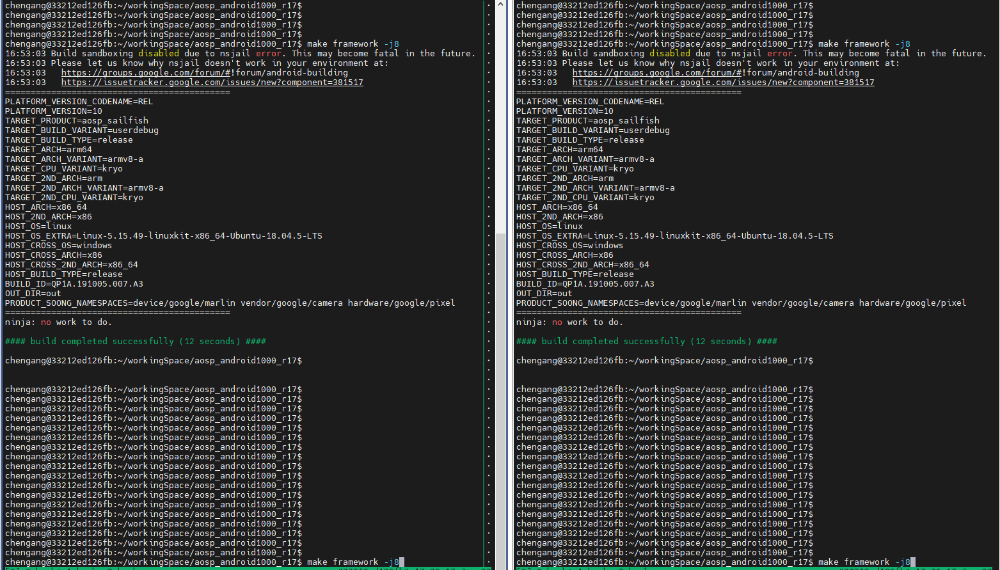
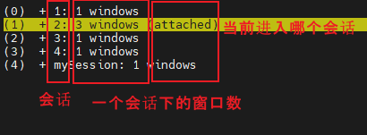
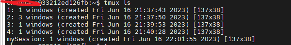
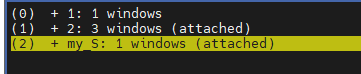
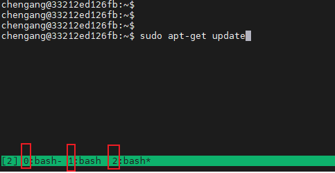
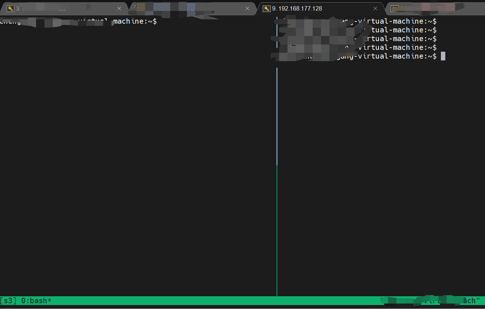

[TOC]
1. 为什么要用tmux？
应用场景：
通过本地终端 ---->对 远端服务器做耗时操作时（长时间编译、长时间下载）
tmux作用：
1、本地的休眠、本地终端的关闭、网络的中断， 不会影响到远端
注：通过本地终端让远端执行命令: 本地终端的关闭，会终止远端的Task进程
即，本地终端 与 远端task 绑定了
2、窗口共享给其他人，可以同时看到运行的情况，比如：

tmux原理：
1、远端永久运行（不存在绑定关系） 并保存 命令执行结果
2、本地端只是显示远端运行 结果 + 通过会话 发送命令
规定：
以后必须用tmux，不允许直接使用
2. 安装
sudo apt-get install tmux
3. 使用
3.1. 会话的结构：

可见，
1、有五个会话： 1、2、3、4、mySession
2、会话2下有 3个窗口
3、当前本地终端attched是会话2（注意：本地终端有两个，可以attached两个）
那么，会话和窗口，分别是什么应用场景？？？
一个会话下，有多个窗口 ------> 有什么好处？ 弊端：要不停切换窗口，不能一直显示
3.2. 第一次新建会话：
tmux new -s my_S
彻底销毁会话：
//法一：
tmux kill-session -t [会话名]
// //法二：会话中， ctrl+d d------delete
新建窗口：
ctrl+b c
3.3. 终端下，进入之前的会话
1、在终端环境中，查看有哪些会话：
tmux ls

2、进入：
tmux a -t [会话名]
//
tmux a -t mySession
退出：
3.4. 在会话环境下，切换
规律：
在会话环境下，执行任何命令，都是以 ctrl+b 为开头
切换会话：
ctrl+b s

切换窗口：星号是当前
ctrl+b 1

4. 优的环境：
两个本地终端 + attached 两个会话 ------> 删除
一个本地shell -------> attach 一个会话 -------> 开两个panel
比两个本地终端优，原因：左边仍然可以看到文件夹

好的参考文章： https://blog.csdn.net/qq_52145272/article/details/127557557
5. 最优的环境
由于tmux，不容易看到过程日志
-----> 最优的环境，就是不用tmux
------> 方法： 直接让本地pc永远不休眠（适合公司电脑）